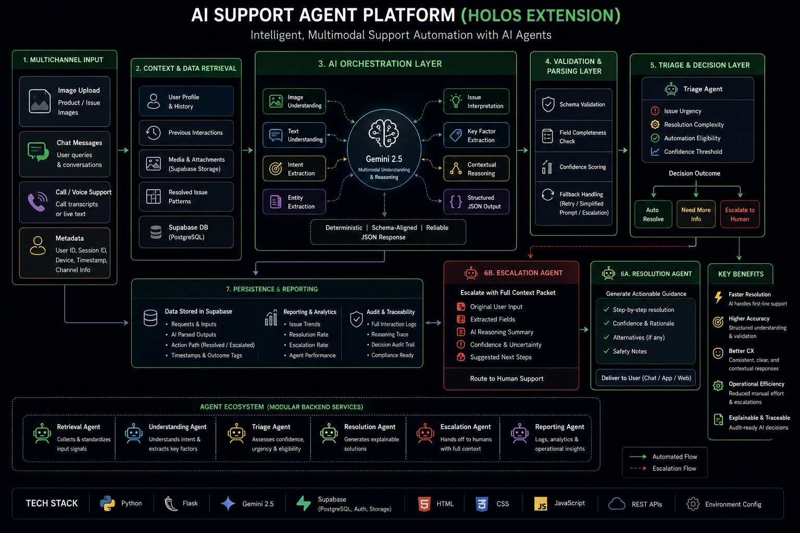

The AI Support Agent Platform is a multimodal AI-powered customer support system designed to automate issue understanding, triage, recommendation generation, and escalation workflows. The platform accepts image uploads, chat messages, and call-style transcript input to create a unified AI-assisted support pipeline.
The system was originally developed as Holos for item understanding from images and later expanded into a complete AI support orchestration platform. Instead of functioning as a simple chatbot, the architecture focuses on structured reasoning, deterministic outputs, confidence-aware automation, and human escalation pathways.
The platform combines multimodal AI reasoning using Gemini 2.5 with backend orchestration services, validation pipelines, cloud persistence, and explainable recommendation generation.

The platform accepts multiple forms of user input including uploaded images, chat conversations, and voice/call transcript text. All incoming data is normalized into a structured internal request format.
The system retrieves contextual information such as previous interactions, uploaded media, user history, and prior issue patterns. This improves continuity and reduces repetitive questioning.
Gemini 2.5 is used for multimodal understanding. The AI model interprets uploaded images, extracts intent from text, identifies issue factors, and generates structured reasoning outputs.
The backend validates AI outputs using schema-based validation rules. Confidence scores, completeness checks, and fallback handling are applied before continuing the workflow.
The triage layer determines issue urgency, automation eligibility, and escalation requirements. Low-confidence or high-risk cases are automatically routed to human support.
For automatable cases, the system generates clear step-by-step support guidance with confidence indicators and explainable reasoning.
Cases requiring human intervention are escalated with full context packets including user input, extracted issue factors, AI reasoning summaries, and uncertainty markers.
All requests, outputs, timestamps, and outcome paths are stored in Supabase for analytics, reporting, auditability, and operational monitoring.
Retrieval Agent:
Collects and standardizes incoming signals and context.
Understanding Agent:
Uses Gemini 2.5 for multimodal reasoning and issue interpretation.
Triage Agent:
Assesses confidence, urgency, and automation eligibility.
Resolution Agent:
Generates explainable support recommendations.
Escalation Agent:
Routes unresolved or uncertain cases to human support.
Reporting Agent:
Handles analytics, logs, and operational reporting.
This project demonstrates how AI can automate real customer support workflows using multimodal reasoning, structured validation, confidence-aware decision-making, and explainable recommendations. Unlike simple chatbot systems, the platform combines backend orchestration, AI understanding, escalation logic, and operational traceability into one scalable support architecture.